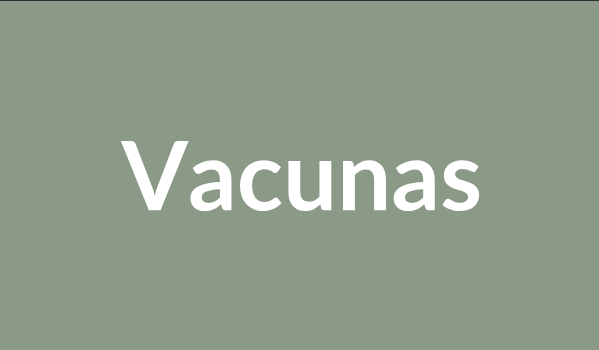

Información útil para el cuidado de tus mascotas

Las vacunas son la herramienta más efectiva para prevenir enfermedades graves. Conoce el calendario de vacunación recomendado por nuestros veterinarios.
La obesidad felina afecta al 50% de los gatos domésticos. Aprende a identificarla y a tomar medidas preventivas desde casa para mejorar su calidad de vida.